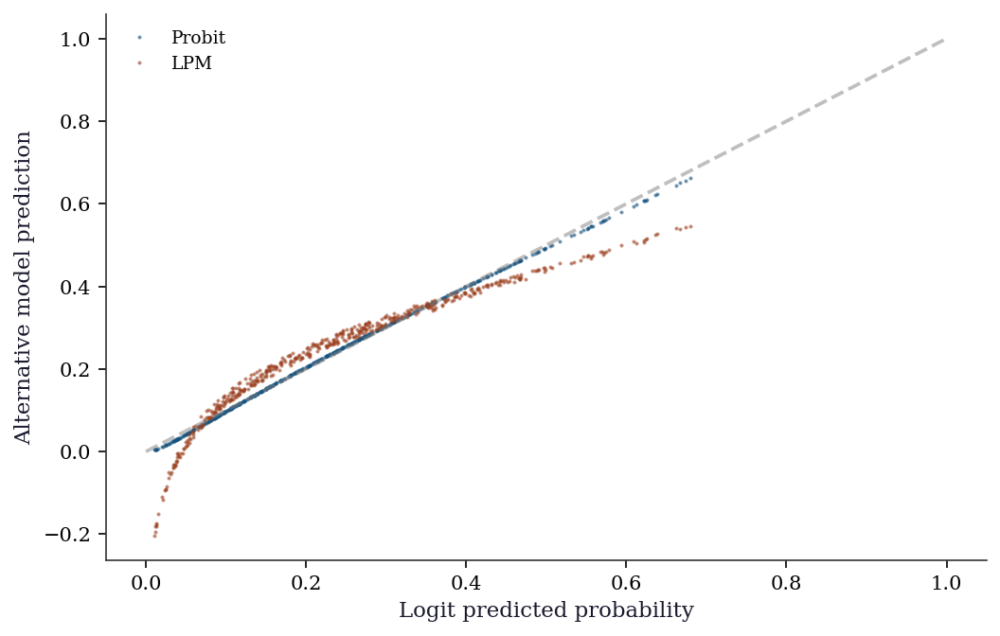
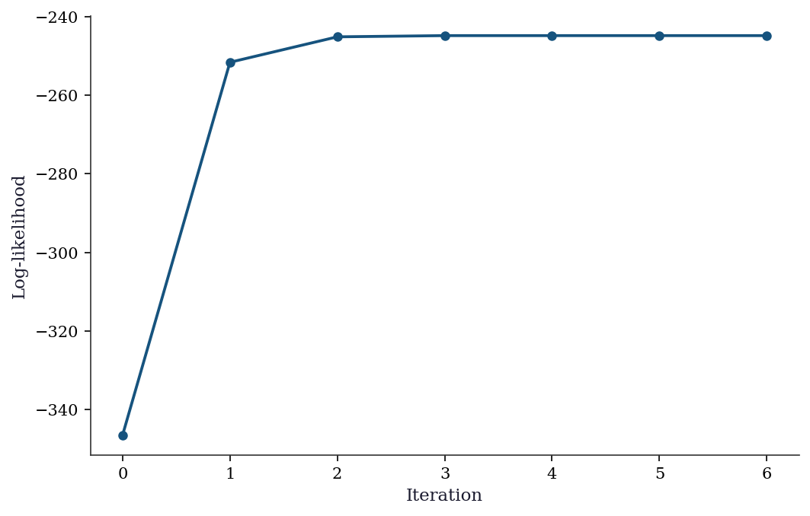
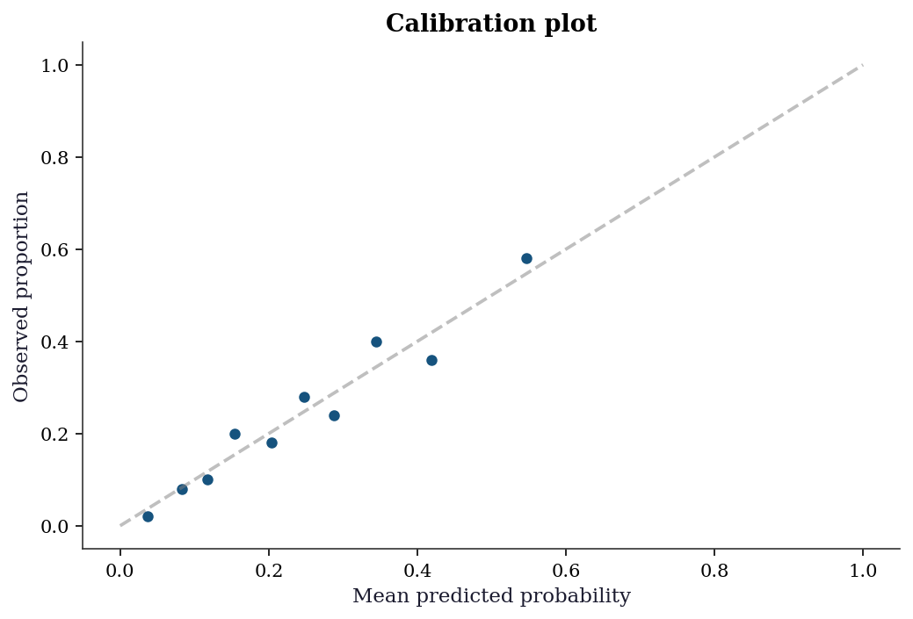
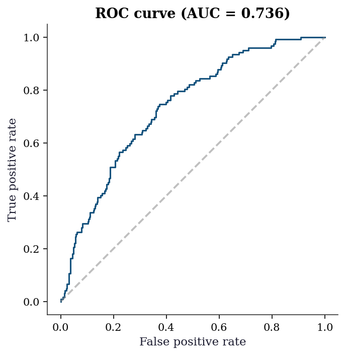
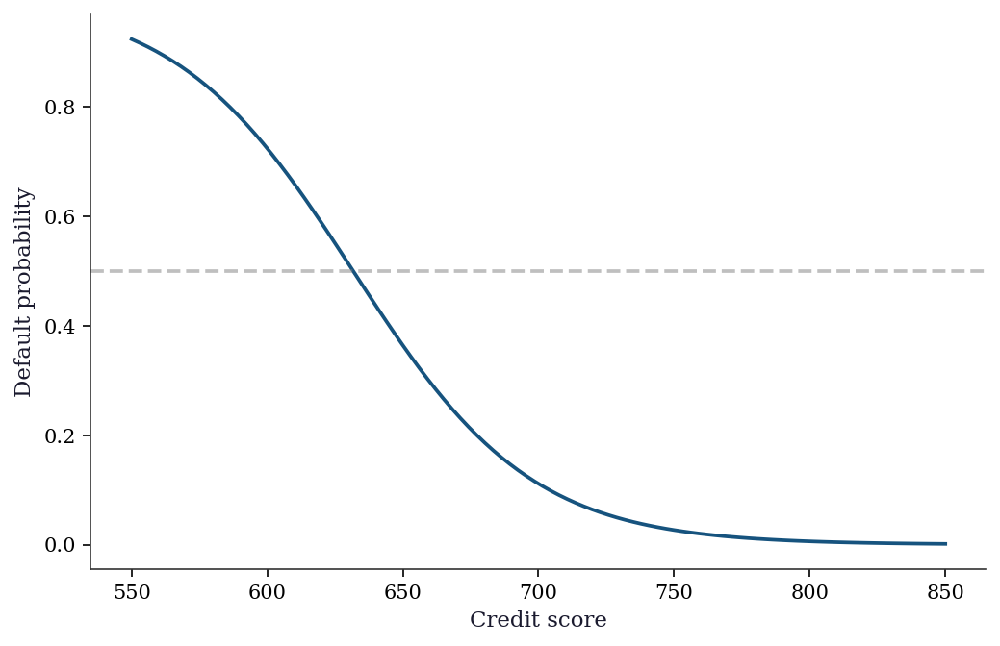

import numpy as np
import matplotlib.pyplot as plt
import statsmodels.api as sm
from statsmodels.discrete.discrete_model import (
Logit, Probit, MNLogit, Poisson, NegativeBinomial,
)
from statsmodels.discrete.count_model import (
ZeroInflatedPoisson, ZeroInflatedNegativeBinomialP,
)
from statsmodels.miscmodels.ordinal_model import OrderedModel
from scipy import stats
plt.style.use('assets/book.mplstyle')
rng = np.random.default_rng(42)13 Discrete Choice and Limited Dependent Variables
13.0.1 Notation for this chapter
| Symbol | Meaning | statsmodels |
|---|---|---|
| \(\Pr(y = j \mid \mathbf{x})\) | Choice probability for outcome \(j\) | .predict() |
| \(\Lambda(\eta) = e^\eta/(1+e^\eta)\) | Logistic CDF | Logit link inverse |
| \(\Phi(\eta)\) | Standard normal CDF | Probit link inverse |
| \(\partial \Pr / \partial x_j\) | Marginal effect | .get_margeff() |
| AME, MEM | Average marginal effect, marginal effect at means | at='overall', at='mean' |
13.1 Motivation
Many outcomes in applied statistics are not continuous: a customer defaults or doesn’t, a patient chooses one of three treatments, a count of insurance claims is 0, 1, 2, …. Standard regression predicts a continuous \(\hat{y}\), which is meaningless for these variables (you can’t have \(\hat{y} = 0.7\) defaults).
Discrete choice models map the linear predictor \(\eta = \mathbf{x}^\top\boldsymbol{\beta}\) through a nonlinear function to produce probabilities. They are GLMs (Chapter 12) with specific families — but they deserve their own chapter because the interpretation is different. In a linear model, \(\beta_j\) is the change in \(\mathbb{E}[y]\) per unit change in \(x_j\). In a logistic model, \(\beta_j\) is the change in log-odds — and converting this to a change in probability requires knowing \(\mathbf{x}\), because the logistic function is nonlinear.
This chapter covers:
- Binary: Logit, Probit, and the marginal effects that make them interpretable
- Multinomial: MNLogit and the IIA problem
- Ordinal:
OrderedModelfor ordered categories - Counts: Poisson, Negative Binomial, zero-inflated models
13.2 Mathematical Foundation
13.2.1 Binary choice: the latent-utility model
The logit and probit models can be derived from a latent variable: \[ y_i^* = \mathbf{x}_i^\top\boldsymbol{\beta} + \varepsilon_i, \qquad y_i = \mathbb{1}(y_i^* > 0). \]
- If \(\varepsilon_i \sim \text{Logistic}(0, 1)\): \(\Pr(y = 1 \mid \mathbf{x}) = \Lambda(\mathbf{x}^\top\boldsymbol{\beta})\) → Logit.
- If \(\varepsilon_i \sim \mathcal{N}(0, 1)\): \(\Pr(y = 1 \mid \mathbf{x}) = \Phi(\mathbf{x}^\top\boldsymbol{\beta})\) → Probit.
Why this matters: The latent-utility interpretation explains why \(\beta_j\) is not a marginal effect. The effect of \(x_j\) on the latent utility is \(\beta_j\), but the effect on the probability depends on where you are on the S-curve:
\[ \frac{\partial \Pr(y=1)}{\partial x_j} = f(\mathbf{x}^\top\boldsymbol{\beta}) \cdot \beta_j, \]
where \(f = \Lambda'\) (logit) or \(f = \phi\) (probit). This marginal effect varies with \(\mathbf{x}\) — it is largest at \(\Pr(y=1) = 0.5\) and approaches zero at the extremes.
13.2.2 Identification
The latent-variable model has two identification problems. Both explain API design choices and constrain how you interpret output.
Location is absorbed by the intercept. Adding a constant \(c\) to every \(\varepsilon_i\) and subtracting \(c\) from \(\beta_0\) produces the same \(\Pr(y^* > 0)\). The normalization \(\mathbb{E}[\varepsilon] = 0\) pins the location. This is why binary choice models should always include an intercept — omitting it conflates the error’s location with the decision threshold.
Scale is not identified. Multiplying \(\boldsymbol{\beta}\) and \(\sigma_\varepsilon\) by the same constant \(c > 0\) leaves \[ \Pr\!\left(\frac{\mathbf{x}^\top\boldsymbol{\beta}}{\sigma} + \frac{\varepsilon}{\sigma} > 0\right) \] unchanged. Only the ratio \(\boldsymbol{\beta}/\sigma\) is identified. Each link function resolves this by fixing the error scale:
- Probit: \(\sigma_\varepsilon = 1\) (standard normal).
- Logit: \(\sigma_\varepsilon = \pi/\sqrt{3} \approx 1.81\) (the standard logistic has variance \(\pi^2/3\)).
Practical consequence: You cannot compare coefficient magnitudes across link functions directly. The ratio \(\beta_{\text{logit}} / \beta_{\text{probit}} \approx 1.6\) (the Amemiya 1981 least-squares approximation; the pure variance ratio gives \(\pi/\sqrt{3} \approx 1.81\)). Report AMEs instead of raw coefficients — the link-function derivative absorbs the scale difference, making AMEs comparable regardless of the link.
13.2.3 Marginal effects
Two conventions:
Average marginal effect (AME): \(\frac{1}{n}\sum_i f(\mathbf{x}_i^\top\hat{\boldsymbol{\beta}}) \cdot \hat{\beta}_j\). Averages the marginal effect over the sample.
Marginal effect at the mean (MEM): \(f(\bar{\mathbf{x}}^\top\hat{\boldsymbol{\beta}}) \cdot \hat{\beta}_j\). Evaluates at the sample means.
AME is generally preferred because it does not assume the “average person” is representative. For dummy variables, the marginal effect is a discrete change: \(\Pr(y=1 \mid x_j=1, \mathbf{x}_{-j}) - \Pr(y=1 \mid x_j=0, \mathbf{x}_{-j})\).
The delta method for AME standard errors. The AME for predictor \(j\) is a nonlinear function of \(\boldsymbol{\beta}\): \[
\text{AME}_j = \frac{1}{n}\sum_{i=1}^n
f(\mathbf{x}_i^\top\boldsymbol{\beta}) \cdot \beta_j.
\] Its variance requires the delta method. The Jacobian \(\mathbf{J} \in \mathbb{R}^{p \times p}\) has entries \[
\frac{\partial\,\text{AME}_j}{\partial \beta_k} = \frac{1}{n}
\sum_{i=1}^n \left[\mathbb{1}(j=k)\,f(\eta_i) +
\beta_j\,f'(\eta_i)\,x_{ik}\right],
\] where \(\eta_i = \mathbf{x}_i^\top\boldsymbol{\beta}\) and \(f'(\eta) = f(\eta)(1 - 2\Lambda(\eta))\) for the logistic. The first term accounts for the direct effect of \(\beta_j\) as a multiplier; the second accounts for how changing \(\beta_k\) shifts every observation along the S-curve. The AME covariance is then \[
\text{Var}(\text{AME}) \approx \mathbf{J}\,\hat{\mathbf{V}}\,
\mathbf{J}^\top,
\] where \(\hat{\mathbf{V}}\) is the estimated covariance of \(\hat{\boldsymbol{\beta}}\). The from-scratch implementation in Section 13.6 computes this Jacobian element by element and verifies it against get_margeff().
13.2.4 Count models and zero-inflation
Poisson regression (Chapter 12) assumes \(\text{Var}(y) = \mu\). When the data has more variance (overdispersion) or more zeros (zero-inflation) than Poisson predicts, alternatives are needed:
- Negative Binomial: adds a dispersion parameter: \(\text{Var}(y) = \mu + \alpha\mu^2\). Handles overdispersion.
- Zero-Inflated Poisson (ZIP): mixes a point mass at zero with a Poisson: \(\Pr(y=0) = \pi + (1-\pi)e^{-\mu}\). Handles excess zeros from a separate zero-generating process.
- Hurdle model: separates the zero/nonzero decision from the count given nonzero. Logit for the hurdle, truncated Poisson for the count.
13.2.5 Separation and perfect prediction
When a predictor perfectly separates the two outcomes — every observation with \(x_j > c\) has \(y = 1\) and every observation with \(x_j \le c\) has \(y = 0\) — the MLE does not exist. The log-likelihood is monotonically increasing in \(|\beta_j|\), so the optimizer drives \(\hat{\beta}_j \to \pm\infty\). The optimizer may report convergence, but the coefficient and its standard error are both enormous and meaningless.
How to detect separation:
- Coefficients exceeding 10 (on standardized predictors) are suspicious.
- Standard errors exceeding 100 indicate that the information matrix is nearly singular along that direction.
- Fitted probabilities at machine epsilon (exactly 0 or 1 after rounding) signal that the model is pushing predictions to the boundary.
The standard remedy is Firth’s penalized likelihood (Firth, 1993), which adds a Jeffreys-prior penalty \(\frac{1}{2}\log|\mathcal{I}(\boldsymbol{\beta})|\) to the log-likelihood. This regularization keeps coefficients finite even under perfect separation. Statsmodels does not implement Firth’s method; the practical response is to detect separation, then drop the offending predictor, combine sparse categories, or use a Bayesian logit with weakly informative priors.
13.2.6 Multinomial logit likelihood
With \(J\) unordered outcomes, the multinomial logit assigns \[ \Pr(y_i = j \mid \mathbf{x}_i) = \frac{\exp(\mathbf{x}_i^\top\boldsymbol{\beta}_j)} {\sum_{k=0}^{J-1} \exp(\mathbf{x}_i^\top\boldsymbol{\beta}_k)}, \] where \(\boldsymbol{\beta}_0 = \mathbf{0}\) for identification (the base category absorbs the intercept). The log-likelihood is \[ \ell(\boldsymbol{\beta}_1, \dots, \boldsymbol{\beta}_{J-1}) = \sum_{i=1}^n \sum_{j=0}^{J-1} \mathbb{1}(y_i = j)\, \log \Pr(y_i = j \mid \mathbf{x}_i). \]
The model has \((J-1) \times p\) parameters — one coefficient vector per non-base outcome. This scaling makes MNLogit impractical when \(J\) is large.
The IIA property follows from the probability ratio: \[ \frac{\Pr(y = j)}{\Pr(y = k)} = \exp\!\bigl(\mathbf{x}^\top(\boldsymbol{\beta}_j - \boldsymbol{\beta}_k)\bigr), \] which does not depend on any other alternative \(\ell \ne j, k\). The Hausman–McFadden test checks IIA by fitting the model on a restricted choice set (dropping one alternative) and testing whether the remaining coefficients change significantly. A significant test statistic means IIA is violated — consider nested logit or mixed logit, which allow correlated errors across alternatives.
13.2.7 Zero-inflation as a finite mixture
The ZIP treats the population as a mixture of two types: a “structural zero” group (probability \(\pi_i\)) that always produces \(y = 0\), and a “count” group (probability \(1 - \pi_i\)) that follows a Poisson. The likelihood is \[ L = \prod_{i=1}^n \bigl[\pi_i + (1-\pi_i)e^{-\mu_i}\bigr]^{\mathbb{1}(y_i=0)} \biggl[(1-\pi_i)\frac{\mu_i^{y_i}e^{-\mu_i}}{y_i!} \biggr]^{\mathbb{1}(y_i>0)}. \]
The EM interpretation makes the structure transparent:
- E-step: Compute the posterior probability that each zero is structural: \(w_i = \pi_i / [\pi_i + (1-\pi_i)e^{-\mu_i}]\) for \(y_i = 0\), and \(w_i = 0\) for \(y_i > 0\).
- M-step: Re-estimate \(\pi_i\) from the \(w_i\) weights (inflation model) and \(\mu_i\) from the weighted Poisson likelihood (count model).
In statsmodels, ZeroInflatedPoisson fits both components simultaneously via MLE, not EM. The model takes two sets of regressors: exog for the count component (\(\mu_i\), log link) and exog_infl for the inflation component (\(\pi_i\), logit link). These can be different variables — the factors that determine whether a zero is structural need not be the same factors that determine the count magnitude.
13.3 The Algorithm
All models in this chapter are fit by MLE using Newton-Raphson or BFGS (Chapter 2). The key computational step is the log-likelihood gradient (score), which statsmodels computes analytically.
The logit log-likelihood is globally concave, so Newton-Raphson converges from any starting point (absent separation). The Hessian \(\mathbf{H} = -\mathbf{X}^\top\mathbf{W}\mathbf{X}\) is negative semi-definite because \(\mathbf{W}\) has non-negative diagonal entries \(\mu_i(1-\mu_i)\). This is why logit is computationally easy compared to models with non-concave likelihoods. Statsmodels uses Newton-Raphson by default for Logit.fit(), which is Algorithm 13.2 with an analytic Hessian (Chapter 2 covers Newton-Raphson in the general optimization context).
13.4 Statistical Properties
Logit vs Probit: In practice, they give nearly identical predicted probabilities. The logit coefficients are approximately 1.6× the probit coefficients. Choose logit for the odds-ratio interpretation (in epidemiology); choose probit when the latent-variable story matters (in economics).
IIA (Independence of Irrelevant Alternatives): The multinomial logit (MNLogit) assumes that the relative odds between any two alternatives are independent of other alternatives. The classic counterexample: red bus vs blue bus. Adding a blue bus (identical to the red one) should not change the car-vs-bus choice, but MNLogit redistributes probability equally. The Hausman–McFadden test checks for IIA violations.
Marginal effect SEs via the delta method: The AME is a nonlinear function of \(\hat{\boldsymbol{\beta}}\). Its variance is computed via the delta method: \(\text{Var}(\text{AME}_j) \approx \left(\frac{\partial \text{AME}_j}{\partial \boldsymbol{\beta}}\right)^\top \hat{\mathbf{V}} \left(\frac{\partial \text{AME}_j}{\partial \boldsymbol{\beta}}\right)\), where \(\hat{\mathbf{V}}\) is the covariance of \(\hat{\boldsymbol{\beta}}\). Statsmodels’ get_margeff() computes this automatically.
13.5 Statsmodels Implementation
13.5.1 Logit and marginal effects
# Simulate binary choice data
n = 500
income = rng.exponential(50000, n)
age = rng.uniform(20, 65, n)
X = np.column_stack([
np.log(income / 50000),
(age - 40) / 10,
])
X_sm = sm.add_constant(X)
# True model: default probability depends on income and age
eta = -1 + 0.8*X[:, 0] - 0.5*X[:, 1]
prob = 1 / (1 + np.exp(-eta))
y_default = rng.binomial(1, prob)
# Fit logit
logit_res = Logit(y_default, X_sm).fit(disp=0)
print(logit_res.summary().tables[1])==============================================================================
coef std err z P>|z| [0.025 0.975]
------------------------------------------------------------------------------
const -0.8831 0.112 -7.852 0.000 -1.103 -0.663
x1 0.7156 0.117 6.113 0.000 0.486 0.945
x2 -0.3899 0.089 -4.388 0.000 -0.564 -0.216
==============================================================================# Marginal effects: the interpretable output
mfx = logit_res.get_margeff(at='overall') # AME
print("\nAverage Marginal Effects:")
print(mfx.summary())
Average Marginal Effects:
Logit Marginal Effects
=====================================
Dep. Variable: y
Method: dydx
At: overall
==============================================================================
dy/dx std err z P>|z| [0.025 0.975]
------------------------------------------------------------------------------
x1 0.1152 0.017 6.908 0.000 0.083 0.148
x2 -0.0628 0.013 -4.677 0.000 -0.089 -0.036
==============================================================================Reading the output: The AME for x1 (log income) tells you: on average across the sample, a one-unit increase in log income changes the probability of default by AME percentage points. This is directly interpretable; the logit coefficient is not (it’s in log-odds units).
13.5.2 Probit comparison
probit_res = Probit(y_default, X_sm).fit(disp=0)
print(f"{'':>12} {'Logit':>10} {'Probit':>10} {'Ratio':>8}")
for j in range(3):
ratio = logit_res.params[j] / probit_res.params[j]
print(f"beta_{j:>8} {logit_res.params[j]:>10.4f} "
f"{probit_res.params[j]:>10.4f} {ratio:>8.2f}")
print(f"\nRatio ≈ 1.6 (logistic variance π²/3 vs normal variance 1)") Logit Probit Ratio
beta_ 0 -0.8831 -0.5316 1.66
beta_ 1 0.7156 0.4159 1.72
beta_ 2 -0.3899 -0.2268 1.72
Ratio ≈ 1.6 (logistic variance π²/3 vs normal variance 1)13.5.3 Count models: Poisson vs NegBin vs ZIP
# Simulate zero-inflated count data
n = 500
x = rng.standard_normal((n, 1))
x_sm = sm.add_constant(x)
# Zero-inflation: 30% of observations are structural zeros
is_zero = rng.binomial(1, 0.3, n)
mu = np.exp(0.5 + 0.8 * x[:, 0])
y_zip = np.where(is_zero, 0, rng.poisson(mu))
print(f"Zeros: {np.mean(y_zip == 0):.1%} (30% structural + Poisson zeros)")
print(f"Mean: {y_zip.mean():.2f}, Var: {y_zip.var():.2f}")
print(f"Var/Mean: {y_zip.var()/y_zip.mean():.2f}")
# Fit three models
pois_res = Poisson(y_zip, x_sm).fit(disp=0)
nb_res = NegativeBinomial(y_zip, x_sm).fit(disp=0)
zip_res = ZeroInflatedPoisson(y_zip, x_sm, exog_infl=x_sm).fit(
disp=0, maxiter=100,
)
print(f"\n{'Model':<8} {'AIC':>8} {'β₁':>8} {'Pr(y=0) pred':>14}")
for name, res in [('Poisson', pois_res), ('NegBin', nb_res), ('ZIP', zip_res)]:
pred_zero = (res.predict() == 0).mean() if name != 'ZIP' else None
if name == 'Poisson':
pred_zero = np.mean(np.exp(-np.exp(x_sm @ pois_res.params)))
elif name == 'NegBin':
pred_zero = np.mean(res.predict(which='prob')[:, 0]) if hasattr(res, 'predict') else 'N/A'
print(f"{name:<8} {res.aic:>8.1f} {res.params[1]:>8.3f} {'':>14}")Zeros: 47.4% (30% structural + Poisson zeros)
Mean: 1.49, Var: 5.46
Var/Mean: 3.68
Model AIC β₁ Pr(y=0) pred
Poisson 1565.8 0.856
NegBin 1472.9 0.835
ZIP 1414.4 0.020 13.5.4 Ordered model
# Simulate ordered outcome (satisfaction: low, medium, high)
n = 400
x_ord = rng.standard_normal((n, 2))
latent = x_ord @ [1.5, -0.5] + rng.logistic(size=n)
y_ord = np.digitize(latent, [-1, 1]) # 0, 1, 2
ord_res = OrderedModel(y_ord, x_ord, distr='logit').fit(disp=0)
print("Ordered Logit:")
print(f"Coefficients: {ord_res.params[:2].round(3)}")
print(f"Thresholds: {ord_res.params[2:].round(3)}")
# Predicted probabilities for the first observation
pred_probs = ord_res.predict()
print(f"\nPredicted probs (first 3 obs):")
print(pred_probs[:3].round(3))Ordered Logit:
Coefficients: [ 1.617 -0.439]
Thresholds: [-0.927 0.8 ]
Predicted probs (first 3 obs):
[[0.197 0.497 0.306]
[0.339 0.487 0.174]
[0.789 0.183 0.028]]13.5.5 MNLogit: multinomial outcomes
# Simulate 3-choice data: transport mode
n_mn = 600
x_inc = rng.exponential(50000, n_mn)
x_dist = rng.exponential(5, n_mn)
X_mn = np.column_stack([
np.log(x_inc / 50000),
(x_dist - 5) / 3,
])
X_mn_sm = sm.add_constant(X_mn)
# Utilities: bus (base=0), car (1), bike (2)
V_car = 0.5 + 0.8*X_mn[:, 0] - 0.3*X_mn[:, 1]
V_bike = -0.2 - 0.1*X_mn[:, 0] + 0.6*X_mn[:, 1]
denom_mn = 1 + np.exp(V_car) + np.exp(V_bike)
p_bus = 1 / denom_mn
p_car = np.exp(V_car) / denom_mn
p_bike = np.exp(V_bike) / denom_mn
probs_mn = np.column_stack([p_bus, p_car, p_bike])
y_mode = np.array([
rng.choice(3, p=probs_mn[i]) for i in range(n_mn)
])
mnl_res = MNLogit(y_mode, X_mn_sm).fit(disp=0)
print("MNLogit (base=0: bus):")
print(mnl_res.summary().tables[1])MNLogit (base=0: bus):
==============================================================================
y=1 coef std err z P>|z| [0.025 0.975]
------------------------------------------------------------------------------
const 0.4368 0.126 3.479 0.001 0.191 0.683
x1 0.6985 0.100 6.962 0.000 0.502 0.895
x2 -0.4882 0.105 -4.667 0.000 -0.693 -0.283
------------------------------------------------------------------------------
y=2 coef std err z P>|z| [0.025 0.975]
------------------------------------------------------------------------------
const -0.4434 0.153 -2.900 0.004 -0.743 -0.144
x1 -0.3268 0.093 -3.527 0.000 -0.508 -0.145
x2 0.5932 0.087 6.790 0.000 0.422 0.764
==============================================================================With \(J = 3\) outcomes, MNLogit estimates \((J-1) \times p = 2 \times 3 = 6\) parameters. Each column of coefficients gives the log-odds of that outcome relative to the base category. The coefficient on income for “car” is positive: higher income increases the log-odds of choosing car over bus.
13.5.6 Marginal effects: continuous vs discrete variables
# Continuous variable: calculus-based AME
mfx_cont = logit_res.get_margeff(at='overall')
print("Continuous variable AME:")
print(mfx_cont.summary())
# Discrete change for a dummy variable
# What if x1 jumps from 0 to 1 (holding x2 at observed)?
p_at_0 = logit_res.predict(np.column_stack([
np.ones(len(X_sm)),
np.zeros(len(X_sm)),
X_sm[:, 2],
]))
p_at_1 = logit_res.predict(np.column_stack([
np.ones(len(X_sm)),
np.ones(len(X_sm)),
X_sm[:, 2],
]))
discrete_eff = (p_at_1 - p_at_0).mean()
print(f"\nDiscrete change (x1: 0 -> 1): "
f"{discrete_eff:.4f}")
print("For continuous variables, AME approximates "
"discrete change at small increments.")
print("For dummy variables, always use the discrete "
"change, not the calculus derivative.")Continuous variable AME:
Logit Marginal Effects
=====================================
Dep. Variable: y
Method: dydx
At: overall
==============================================================================
dy/dx std err z P>|z| [0.025 0.975]
------------------------------------------------------------------------------
x1 0.1152 0.017 6.908 0.000 0.083 0.148
x2 -0.0628 0.013 -4.677 0.000 -0.089 -0.036
==============================================================================
Discrete change (x1: 0 -> 1): 0.1543
For continuous variables, AME approximates discrete change at small increments.
For dummy variables, always use the discrete change, not the calculus derivative.13.5.7 Predicted probability comparison
logit_p = logit_res.predict()
probit_p = probit_res.predict()
# Linear probability model (OLS on binary outcome)
lpm_res = sm.OLS(y_default, X_sm).fit()
lpm_p = lpm_res.predict()
fig, ax = plt.subplots()
order = np.argsort(logit_p)
ax.plot(
logit_p[order], probit_p[order], '.',
ms=2, alpha=0.5, label='Probit',
)
ax.plot(
logit_p[order], lpm_p[order], '.',
ms=2, alpha=0.5, label='LPM',
)
ax.plot([0, 1], [0, 1], '--', color='gray', alpha=0.5)
ax.set_xlabel("Logit predicted probability")
ax.set_ylabel("Alternative model prediction")
ax.legend(fontsize=9)
plt.show()
n_outside = np.mean((lpm_p < 0) | (lpm_p > 1))
print(f"LPM predictions outside [0,1]: "
f"{n_outside:.1%}")
LPM predictions outside [0,1]: 6.8%The LPM (OLS on a binary outcome) is fast and its coefficients are directly interpretable as marginal effects — but it can predict outside \([0, 1]\) and assumes constant marginal effects across the entire range of \(\mathbf{x}\). Logit and probit avoid both problems at the cost of requiring the marginal-effects calculation for interpretation.
13.5.8 ZIP parameter interpretation
# ZIP separates inflation and count parameters
print("ZIP model structure:")
print(zip_res.summary().tables[1])
n_infl = x_sm.shape[1]
print(f"\nFirst {n_infl} params: inflation model "
"(logit link -> P(structural zero))")
print(f"Last {n_infl} params: count model "
"(log link -> Poisson mean)")
# Predicted inflation probability at x=0
inflate_logit = zip_res.params[0]
inflate_p = 1 / (1 + np.exp(-inflate_logit))
print(f"\nP(structural zero | x=0): "
f"{inflate_p:.3f} (true: 0.30)")ZIP model structure:
=================================================================================
coef std err z P>|z| [0.025 0.975]
---------------------------------------------------------------------------------
inflate_const -0.9698 0.152 -6.399 0.000 -1.267 -0.673
inflate_x1 0.0201 0.162 0.124 0.902 -0.298 0.338
const 0.5117 0.048 10.644 0.000 0.417 0.606
x1 0.8261 0.037 22.260 0.000 0.753 0.899
=================================================================================
First 2 params: inflation model (logit link -> P(structural zero))
Last 2 params: count model (log link -> Poisson mean)
P(structural zero | x=0): 0.275 (true: 0.30)The inflation parameters use a logit link: a positive inflation intercept means a higher baseline probability of structural zeros. The count parameters use a log link, as in standard Poisson. A common mistake is interpreting the inflation coefficients on the probability scale — they are on the log-odds scale, just like binary logit coefficients.
13.6 From-Scratch Implementation
13.6.1 Logit MLE via Newton-Raphson
def logit_newton(X, y, tol=1e-8, maxiter=25):
"""Logit MLE via Newton-Raphson.
Implements Algorithm 13.2. Returns fitted params,
log-likelihood trace, and iteration count.
"""
n, p = X.shape
beta = np.zeros(p)
ll_trace = []
for k in range(maxiter):
eta = X @ beta
mu = 1 / (1 + np.exp(-eta))
# Log-likelihood (numerically stable)
ll = np.sum(y * eta - np.logaddexp(0, eta))
ll_trace.append(ll)
# Score and Hessian
g = X.T @ (y - mu)
W = mu * (1 - mu)
H = -(X.T * W) @ X
# Newton step: solve H @ delta = g
delta = np.linalg.solve(H, g)
beta = beta - delta
if np.max(np.abs(g)) < tol:
break
return beta, np.array(ll_trace), k + 1beta_nr, ll_trace, n_iter = logit_newton(
X_sm, y_default,
)
print(f"Newton-Raphson converged in {n_iter} iterations")
print(f"\n{'':>10} {'N-R':>10} {'statsmodels':>12}")
for j in range(len(beta_nr)):
print(f"beta_{j:<5} {beta_nr[j]:>10.6f} "
f"{logit_res.params[j]:>12.6f}")
print(f"\nMax |diff|: "
f"{np.max(np.abs(beta_nr - logit_res.params)):.2e}")Newton-Raphson converged in 7 iterations
N-R statsmodels
beta_0 -0.883051 -0.883051
beta_1 0.715613 0.715613
beta_2 -0.389866 -0.389866
Max |diff|: 0.00e+00fig, ax = plt.subplots()
ax.plot(
range(len(ll_trace)), ll_trace,
'o-', ms=5, color='C0',
)
ax.set_xlabel("Iteration")
ax.set_ylabel("Log-likelihood")
plt.show()
Newton-Raphson converges in about 5–6 iterations because the logit likelihood is smooth and globally concave. The concavity guarantees that every Newton step increases the log-likelihood (absent numerical issues), which is why statsmodels uses Newton-Raphson as the default solver for Logit.fit(). For comparison, BFGS (a quasi-Newton method that approximates the Hessian) typically needs more iterations but avoids the \(O(p^3)\) cost of solving the Newton system at each step.
13.6.2 Marginal effects via the delta method
def logit_margeff_ame(params, X, cov_params):
"""Average marginal effects for logit with delta-method SEs.
Implements Algorithm 13.1.
"""
n, p = X.shape
eta = X @ params
f = np.exp(-eta) / (1 + np.exp(-eta))**2 # logistic PDF
# Average marginal effect for each predictor
ame = np.zeros(p)
for j in range(p):
ame[j] = np.mean(f * params[j])
# Delta method for SEs
# Jacobian: d(AME_j)/d(beta)
J = np.zeros((p, p))
for j in range(p):
for k in range(p):
if j == k:
J[j, k] = np.mean(f) + np.mean(
params[j] * f * (1 - 2/(1+np.exp(-eta))) * X[:, k]
)
else:
J[j, k] = np.mean(
params[j] * f * (1 - 2/(1+np.exp(-eta))) * X[:, k]
)
ame_cov = J @ cov_params @ J.T
ame_se = np.sqrt(np.diag(ame_cov))
return ame, ame_seame_ours, se_ours = logit_margeff_ame(
logit_res.params, X_sm, logit_res.cov_params(),
)
mfx_sm = logit_res.get_margeff(at='overall')
print(f"{'':>12} {'Our AME':>10} {'SM AME':>10} {'Our SE':>8} {'SM SE':>8}")
for j in range(len(mfx_sm.margeff)):
print(f"x{j+1:<10} {ame_ours[j+1]:>10.4f} {mfx_sm.margeff[j]:>10.4f} "
f"{se_ours[j+1]:>8.4f} {mfx_sm.margeff_se[j]:>8.4f}") Our AME SM AME Our SE SM SE
x1 0.1152 0.1152 0.0167 0.0167
x2 -0.0628 -0.0628 0.0134 0.013413.7 Diagnostics
13.7.1 Checking predicted probabilities
pred_prob = logit_res.predict()
n_bins = 10
bins = np.percentile(pred_prob, np.linspace(0, 100, n_bins + 1))
bins[-1] += 1e-6
fig, ax = plt.subplots()
for i in range(n_bins):
mask = (pred_prob >= bins[i]) & (pred_prob < bins[i+1])
if mask.sum() > 0:
obs_rate = y_default[mask].mean()
pred_rate = pred_prob[mask].mean()
ax.scatter(pred_rate, obs_rate, s=mask.sum()/2, color="C0")
ax.plot([0, 1], [0, 1], '--', color="gray", alpha=0.5)
ax.set_xlabel("Mean predicted probability")
ax.set_ylabel("Observed proportion")
ax.set_title("Calibration plot")
plt.show()
13.7.2 Hosmer-Lemeshow goodness-of-fit test
The calibration plot above is visual. The Hosmer-Lemeshow test formalizes it: group observations into deciles of predicted probability, then test whether the observed and expected counts differ more than chance. The test statistic follows an approximate \(\chi^2_{G-2}\) distribution under the null of good fit.
# Hosmer-Lemeshow test (from scratch)
sorted_idx = np.argsort(pred_prob)
groups = np.array_split(sorted_idx, 10)
hl_stat = 0.0
print(f"{'Group':>5} {'n':>5} {'Obs':>5} {'Exp':>7} "
f"{'Obs%':>6} {'Exp%':>6}")
for g_idx, g in enumerate(groups):
n_g = len(g)
obs_g = y_default[g].sum()
exp_g = pred_prob[g].sum()
obs_pct = obs_g / n_g
exp_pct = exp_g / n_g
print(f"{g_idx+1:>5} {n_g:>5} {obs_g:>5} {exp_g:>7.1f} "
f"{obs_pct:>6.3f} {exp_pct:>6.3f}")
# HL chi-squared contribution
if exp_g > 0 and exp_g < n_g:
hl_stat += (
(obs_g - exp_g)**2
/ (exp_g * (1 - exp_g / n_g))
)
hl_pval = 1 - stats.chi2.cdf(hl_stat, df=8)
print(f"\nHL statistic: {hl_stat:.2f}, "
f"p-value: {hl_pval:.4f}")
if hl_pval > 0.05:
print("No evidence of poor fit (fail to reject H0)")
else:
print("Model may be miscalibrated (reject H0)")Group n Obs Exp Obs% Exp%
1 50 1 1.9 0.020 0.037
2 50 4 4.2 0.080 0.083
3 50 5 5.8 0.100 0.117
4 50 10 7.7 0.200 0.154
5 50 9 10.2 0.180 0.203
6 50 14 12.4 0.280 0.247
7 50 12 14.4 0.240 0.287
8 50 20 17.2 0.400 0.345
9 50 18 20.9 0.360 0.419
10 50 29 27.3 0.580 0.547
HL statistic: 3.97, p-value: 0.8599
No evidence of poor fit (fail to reject H0)13.7.3 ROC curve and classification accuracy
# ROC curve from scratch (no sklearn needed)
order_roc = np.argsort(-pred_prob)
y_sorted = y_default[order_roc]
tpr = np.cumsum(y_sorted) / y_sorted.sum()
fpr = (
np.cumsum(1 - y_sorted)
/ (1 - y_sorted).sum()
)
# Prepend origin
tpr = np.concatenate([[0], tpr])
fpr = np.concatenate([[0], fpr])
auc = np.trapz(tpr, fpr)
fig, ax = plt.subplots()
ax.plot(fpr, tpr, color='C0', linewidth=1.5)
ax.plot([0, 1], [0, 1], '--', color='gray', alpha=0.5)
ax.set_xlabel("False positive rate")
ax.set_ylabel("True positive rate")
ax.set_title(f"ROC curve (AUC = {auc:.3f})")
ax.set_aspect('equal')
plt.show()
13.7.4 Overdispersion test for Poisson
When fitting a Poisson model, the key assumption \(\text{Var}(y) = \mu\) should be checked. The Pearson dispersion statistic is the simplest diagnostic: values substantially above 1.0 indicate overdispersion.
mu_hat = pois_res.predict()
pearson_resid = (y_zip - mu_hat) / np.sqrt(mu_hat)
dispersion = (
np.sum(pearson_resid**2)
/ (len(y_zip) - x_sm.shape[1])
)
print(f"Pearson dispersion: {dispersion:.2f}")
print(f"(should be ~1 if Poisson is correct)")
if dispersion > 1.5:
print("Overdispersion detected: consider NegBin "
"or ZIP")Pearson dispersion: 1.54
(should be ~1 if Poisson is correct)
Overdispersion detected: consider NegBin or ZIP13.7.5 Separation detection
# Near-perfect separation: model will converge
# but coefficients are enormous
n_sep = 200
x_sep = rng.standard_normal((n_sep, 1))
# Almost perfect: flip 3 obs near boundary
y_sep = (x_sep[:, 0] > 0).astype(int)
near_boundary = np.argsort(np.abs(x_sep[:, 0]))[:3]
y_sep[near_boundary] = 1 - y_sep[near_boundary]
x_sep_sm = sm.add_constant(x_sep)
sep_res = Logit(y_sep, x_sep_sm).fit(
disp=0, maxiter=100,
)
print("Near-perfect separation diagnostics:")
print(f" Coefficient: {sep_res.params[1]:>8.1f}")
print(f" Std error: {sep_res.bse[1]:>8.1f}")
print(f" Max pred: {sep_res.predict().max():.6f}")
print(f" Min pred: {sep_res.predict().min():.6f}")
print("\nCompare to well-separated logit:")
print(f" Coefficient: {logit_res.params[1]:>8.4f}")
print(f" Std error: {logit_res.bse[1]:>8.4f}")
print("\nRed flags: coefficient magnitude >> 5, "
"SE >> 10,")
print("predicted probs at 0 or 1.")Near-perfect separation diagnostics:
Coefficient: 77.8
Std error: 40.3
Max pred: 1.000000
Min pred: 0.000000
Compare to well-separated logit:
Coefficient: 0.7156
Std error: 0.1171
Red flags: coefficient magnitude >> 5, SE >> 10,
predicted probs at 0 or 1.13.7.6 Vuong test for non-nested model comparison
When comparing Poisson vs ZIP (non-nested), the LR test does not apply. The Vuong test compares the pointwise log-likelihood ratios:
# Vuong test: Poisson vs ZIP
ll_pois = pois_res.model.loglikeobs(pois_res.params)
ll_zip = zip_res.model.loglikeobs(zip_res.params)
m = ll_zip - ll_pois
vuong_stat = np.sqrt(n) * m.mean() / m.std()
vuong_pval = 2 * (1 - stats.norm.cdf(abs(vuong_stat)))
print(f"Vuong test (ZIP vs Poisson): z={vuong_stat:.3f}, p={vuong_pval:.4f}")
if vuong_stat > 1.96:
print("ZIP preferred over Poisson")
elif vuong_stat < -1.96:
print("Poisson preferred over ZIP")
else:
print("No significant difference")Vuong test (ZIP vs Poisson): z=4.332, p=0.0000
ZIP preferred over Poisson13.8 Computational Considerations
| Model | Parameters | Optimization | Notes |
|---|---|---|---|
| Logit/Probit | \(p\) | Newton-Raphson | Fast, concave likelihood |
| MNLogit | \((J-1) \times p\) | BFGS/Newton | Scales with \(J\) (categories) |
| OrderedModel | \(p + J - 1\) | BFGS | Thresholds add \(J-1\) params |
| Poisson/NegBin | \(p\) (+1 for NB) | Newton-Raphson | NB has extra \(\alpha\) |
| ZIP/ZINB | \(2p\) | BFGS/Newton | Inflation + count params |
MNLogit with many categories (\(J > 10\)) can be slow because the parameter count is \((J-1) \times p\). For many categories, consider sequential logit or random-utility models.
13.9 Worked Example
Modeling loan default with logit: a complete analysis from specification to marginal effects.
# Synthetic loan data
n = 1000
credit_score = rng.normal(700, 50, n)
loan_amount = rng.exponential(30000, n)
income = rng.exponential(60000, n)
X_loan = np.column_stack([
(credit_score - 700) / 50, # standardized credit score
np.log(loan_amount / 30000), # log loan amount
np.log(income / 60000), # log income
])
X_loan_sm = sm.add_constant(X_loan)
# Default probability
eta_loan = -2 - 1.5*X_loan[:, 0] + 0.5*X_loan[:, 1] - 0.3*X_loan[:, 2]
p_default = 1 / (1 + np.exp(-eta_loan))
y_loan = rng.binomial(1, p_default)
print(f"Default rate: {y_loan.mean():.1%}")
print(f"n = {n}")Default rate: 19.2%
n = 1000logit_loan = Logit(y_loan, X_loan_sm).fit(disp=0)
print("Logit model:")
print(logit_loan.summary().tables[1])
print("\nMarginal effects (AME):")
mfx_loan = logit_loan.get_margeff()
print(mfx_loan.summary())
print(f"\nInterpretation:")
print(f" A 1-SD increase in credit score decreases default")
print(f" probability by {abs(mfx_loan.margeff[0]):.1%} on average.")Logit model:
==============================================================================
coef std err z P>|z| [0.025 0.975]
------------------------------------------------------------------------------
const -2.0783 0.137 -15.147 0.000 -2.347 -1.809
x1 -1.5202 0.127 -11.982 0.000 -1.769 -1.272
x2 0.4503 0.085 5.324 0.000 0.285 0.616
x3 -0.3355 0.067 -5.012 0.000 -0.467 -0.204
==============================================================================
Marginal effects (AME):
Logit Marginal Effects
=====================================
Dep. Variable: y
Method: dydx
At: overall
==============================================================================
dy/dx std err z P>|z| [0.025 0.975]
------------------------------------------------------------------------------
x1 -0.1699 0.011 -16.122 0.000 -0.191 -0.149
x2 0.0503 0.009 5.562 0.000 0.033 0.068
x3 -0.0375 0.007 -5.229 0.000 -0.052 -0.023
==============================================================================
Interpretation:
A 1-SD increase in credit score decreases default
probability by 17.0% on average.cs_grid = np.linspace(-3, 3, 100)
X_pred = np.column_stack([
np.ones(100),
cs_grid,
np.zeros(100), # log loan amount at mean
np.zeros(100), # log income at mean
])
pred_probs = logit_loan.predict(X_pred)
fig, ax = plt.subplots()
ax.plot(cs_grid * 50 + 700, pred_probs, color="C0", linewidth=1.8)
ax.set_xlabel("Credit score")
ax.set_ylabel("Default probability")
ax.axhline(0.5, color="gray", linestyle="--", alpha=0.5)
plt.show()
13.10 Exercises
Exercise 13.1 (\(\star\star\), diagnostic failure). Fit a Poisson model to data that is actually zero-inflated. Examine the residual plot and the predicted vs observed zero proportion. How does the Poisson model’s predicted zero rate compare to the observed rate? Use the Vuong test to compare Poisson vs ZIP.
%%
# Zero-inflated data (reuse from earlier)
pois_pred_zeros = np.exp(-pois_res.predict()).mean()
obs_zeros = (y_zip == 0).mean()
print(f"Observed zero rate: {obs_zeros:.3f}")
print(f"Poisson predicted zeros: {pois_pred_zeros:.3f}")
print(f"Gap: {obs_zeros - pois_pred_zeros:.3f}")
print(f"\nPoisson underpredicts zeros by {(obs_zeros-pois_pred_zeros)/obs_zeros:.0%}")
# Vuong test (reuse from diagnostics)
m = zip_res.model.loglikeobs(zip_res.params) - pois_res.model.loglikeobs(pois_res.params)
v_stat = np.sqrt(len(m)) * m.mean() / m.std()
print(f"\nVuong: z={v_stat:.2f}, p={2*(1-stats.norm.cdf(abs(v_stat))):.4f}")
print("ZIP is significantly better at capturing the zero-inflation.")Observed zero rate: 0.474
Poisson predicted zeros: 0.369
Gap: 0.105
Poisson underpredicts zeros by 22%
Vuong: z=4.84, p=0.0000
ZIP is significantly better at capturing the zero-inflation.The diagnostic pattern: Poisson underpredicts zeros because it cannot separate structural zeros (the data-generating process never produces a count) from sampling zeros (the count happens to be zero). This shows up as a gap between observed and predicted zero rates, and as overdispersion (Var/Mean > 1).
%%
Exercise 13.2 (\(\star\star\), comparison). Fit logit and probit to the same binary data. Compare: (a) the coefficient ratio \(\beta_{\text{logit}}/\beta_{\text{probit}}\), (b) the predicted probabilities (scatterplot of logit vs probit predictions), and (c) the average marginal effects. Are the AMEs more similar than the coefficients?
%%
logit_ex = Logit(y_default, X_sm).fit(disp=0)
probit_ex = Probit(y_default, X_sm).fit(disp=0)
# (a) Coefficient ratio
print("Coefficient ratios:")
for j in range(3):
print(f" beta_{j}: {logit_ex.params[j]/probit_ex.params[j]:.3f}")
# (b) Predicted probabilities
pred_logit = logit_ex.predict()
pred_probit = probit_ex.predict()
max_diff = np.max(np.abs(pred_logit - pred_probit))
print(f"\nMax |pred_logit - pred_probit|: {max_diff:.4f}")
# (c) AMEs
ame_logit = logit_ex.get_margeff().margeff
ame_probit = probit_ex.get_margeff().margeff
print(f"\nAME comparison:")
print(f" Logit: {ame_logit.round(4)}")
print(f" Probit: {ame_probit.round(4)}")
print(f" Ratio: {(ame_logit/ame_probit).round(3)}")Coefficient ratios:
beta_0: 1.661
beta_1: 1.721
beta_2: 1.719
Max |pred_logit - pred_probit|: 0.0173
AME comparison:
Logit: [ 0.1152 -0.0628]
Probit: [ 0.1142 -0.0623]
Ratio: [1.009 1.008]The coefficient ratio is ~1.6 (as expected from the variance normalization). But the predicted probabilities differ by at most a few percentage points, and the AMEs are nearly identical. This is why applied researchers often don’t worry about logit vs probit — the marginal effects (which are what matter for interpretation) are essentially the same.
%%
Exercise 13.3 (\(\star\star\), implementation). Compute the logit log-likelihood and its gradient (score) from scratch. Verify against logit_res.llf and logit_res.model.score(logit_res.params).
%%
def logit_loglik(params, X, y):
"""Log-likelihood for logistic regression."""
eta = X @ params
# Numerically stable: log(sigma(eta)) = -log(1+exp(-eta))
ll = np.sum(y * eta - np.logaddexp(0, eta))
return ll
def logit_score(params, X, y):
"""Score (gradient) for logistic regression."""
eta = X @ params
mu = 1 / (1 + np.exp(-eta))
return X.T @ (y - mu)
ll_ours = logit_loglik(logit_res.params, X_sm, y_default)
score_ours = logit_score(logit_res.params, X_sm, y_default)
print(f"Log-likelihood:")
print(f" From-scratch: {ll_ours:.4f}")
print(f" statsmodels: {logit_res.llf:.4f}")
print(f" Match: {np.isclose(ll_ours, logit_res.llf, atol=0.01)}")
score_sm = logit_res.model.score(logit_res.params)
print(f"\nScore (should be ≈ 0 at MLE):")
print(f" From-scratch: {score_ours.round(6)}")
print(f" statsmodels: {score_sm.round(6)}")Log-likelihood:
From-scratch: -244.8007
statsmodels: -244.8007
Match: True
Score (should be ≈ 0 at MLE):
From-scratch: [-0. 0. -0.]
statsmodels: [-0. 0. -0.]At the MLE, the score should be approximately zero (the gradient of the log-likelihood vanishes at the maximum). Both implementations confirm this.
%%
Exercise 13.4 (\(\star\star\star\), conceptual). Explain the Independence of Irrelevant Alternatives (IIA) assumption in multinomial logit. Construct the “red bus / blue bus” example: create a three-choice model where adding a third alternative (identical to one existing alternative) changes the predicted shares of the unrelated alternative. Show this with code.
%%
# Red bus / blue bus example
# Choice set 1: {car, red_bus} with equal utility → 50/50 split
# Choice set 2: {car, red_bus, blue_bus} where blue_bus = red_bus
# Under MNLogit (IIA), P(car) = exp(V_car) / sum(exp(V_j))
# With 2 choices: P(car) = exp(1) / (exp(1) + exp(1)) = 0.5
# With 3 choices: P(car) = exp(1) / (exp(1) + exp(1) + exp(1)) = 0.333
V_car = 1.0
V_rbus = 1.0
V_bbus = 1.0 # identical to red bus
# 2-choice model
p2_car = np.exp(V_car) / (np.exp(V_car) + np.exp(V_rbus))
print(f"2 choices: P(car) = {p2_car:.3f}, P(red_bus) = {1-p2_car:.3f}")
# 3-choice model (IIA prediction)
denom3 = np.exp(V_car) + np.exp(V_rbus) + np.exp(V_bbus)
p3_car = np.exp(V_car) / denom3
p3_rbus = np.exp(V_rbus) / denom3
p3_bbus = np.exp(V_bbus) / denom3
print(f"3 choices: P(car) = {p3_car:.3f}, P(red) = {p3_rbus:.3f}, "
f"P(blue) = {p3_bbus:.3f}")
print(f"\nIIA violation: P(car) dropped from {p2_car:.1%} to {p3_car:.1%}")
print("Adding an irrelevant alternative (blue bus = red bus)")
print("changed the car share. This is wrong — the car's desirability")
print("didn't change. IIA forces proportional substitution.")2 choices: P(car) = 0.500, P(red_bus) = 0.500
3 choices: P(car) = 0.333, P(red) = 0.333, P(blue) = 0.333
IIA violation: P(car) dropped from 50.0% to 33.3%
Adding an irrelevant alternative (blue bus = red bus)
changed the car share. This is wrong — the car's desirability
didn't change. IIA forces proportional substitution.The IIA property means that the ratio \(P(i)/P(j)\) is independent of other alternatives. When you add blue bus, \(P(\text{car})/P(\text{red bus})\) stays at 1 — but both drop to 1/3. In reality, the new blue bus should steal only from red bus (they’re identical), leaving P(car) at 0.5. MNLogit cannot model this because the error terms are independent across alternatives. Nested logit and mixed logit relax IIA.
%%
13.11 Bibliographic Notes
The latent-variable derivation of logit and probit is in McFadden (1974). The multinomial logit and IIA: McFadden (1974); the Hausman–McFadden test for IIA violations: Hausman and McFadden (1984). Marginal effects and the delta method: Cameron and Trivedi (2005), Chapter 14. Amemiya (1981) derives the \(\approx 1.6\) coefficient ratio between logit and probit.
Separation and perfect prediction: Albert and Anderson (1984) characterize when logit MLE exists; Firth (1993) introduces the penalized-likelihood solution. Heinze and Schemper (2002) provide practical guidance on detecting and handling separation.
Count models: Cameron and Trivedi (1998) is the definitive reference. Zero-inflated models: Lambert (1992). Hurdle models: Mullahy (1986). The Vuong test for non-nested comparison: Vuong (1989); see also Wilson (2015) for caveats on its use with zero-inflated models.
Ordered choice models: McKelvey and Zavoina (1975). The OrderedModel in statsmodels follows the standard parameterization with threshold cutpoints. For the Hosmer-Lemeshow test: Hosmer and Lemeshow (2000), Chapter 5. ROC analysis for binary classifiers: Fawcett (2006).